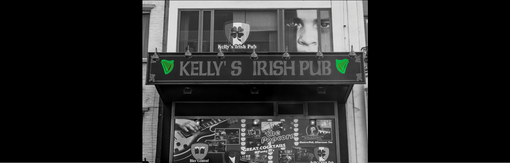

Hotspots
Uitgaan
Culinair | Ontspanning | Uitgaan | Sport en Cultuur
Kelly's Irish Pub | Keyserlei 27, 2018 Antwerpen
Kelly’s Irish Pub is een ware Ierse super pub van formaat, zoals je er een paar vindt in Dublin zelf. Een pub die zijn authentieke gezelligheid weet te behouden door zijn Iers personeel en de verschillende interieurzones. Voeg daar nog een twintigtal TV-schermen aan toe en een mega versie in de barzone en Kelly’s Irish Pub bewijst zich ook als Mekka voor de sport fanaten, zelfs met de mogelijkheid om tot 4 verschillende matchen simultaan te volgen.
Niet alleen live sport, maar ook live muziek draagt bij tot de gezelligheid in deze pub. Minstens twee maal per week op vrijdag, zaterdag, verlengde weekends en schoolvakanties doen ze er nog een schepje boven op.
Naast de Ierse pub bieren hebben ze ook een gamma van 50 verschillende whisky’s. Om het allemaal wat in evenwicht te houden na een paar pints kan je genieten van de traditionele Ierse keuken, maar ook van een sappige hamburger die door velen als de beste van Antwerpen wordt beschouwd.
Dus ben je op zoek naar gezelligheid op zijn best met een buitenlands tintje? Je weet nu waar je moet zijn!
Poolplanet | Franklin Rooseveltplaats 5, 2060 Antwerpen
Poolplanet is de grootste Snooker-Cyberzaak van België. Als je op zoek bent naar een gezellige plek die ook wat actie biedt, kom dan zeker hier eens langs!
Poolplanet beschikt over een zeer uniek interieur. Dit retrodesign met zachte rode zetels en sfeervolle lampen, zorgt gegarandeerd voor een leuke avond. Er is ook plaats voor meer dan 100 man en de zaal is gratis beschikbaar voor eventuele geplande evenementen. Neem je liever enkel je date mee? Dan komt het ook zeker goed in Poolplanet! Uiteraard kan je er meer doen dan enkel poolen. Ook een sjotterkast en enkele televisies staan ter beschikking. Poolplanet biedt niet alleen sport/ontspanning, maar beschikt ook over een beperkt menu aan een schappelijke prijs.
Club Panaché| Statiestraat 17, 2018 Antwerpen
Ben je op zoek naar een leuke bezigheid met je vrienden en hebt je zin in wat avontuur? Ben je het allemaal even beu en wil je gewoon geld spenderen en de tijd vergeten? Heb je eerder een rijke man of vrouw op het oog die af en toe eens een bezoekje brengt aan een casino of ben je op zoek naar iets gemeenschappelijks? Dan is Club Panaché the place to be.
Met hun pokertafels, slotmachines, blackjacktafels en roulettes, is deze club het meest geliefde casino in hartje Antwerpen.
Maar let op! Kansspelen hebben de reputatie om verslavend te werken, net zoals de liefde...
Abilux Strip Club | Statiestraat 30, 2018 Antwerpen
Abilux is nog een van de weinige stripclubs in Antwerpen Centrum. Vrijgezellen kunnen er zich naar hartenlust uitleven. Ben je op zoek naar een avondje plezier, gewoon voor de gezelligheid of organiseer je een heuse bachelorparty? Het is allemaal mogelijk in Abilux. Een hemel voor vrijgezellen.
In deze club werken prachtige dames die menig hart op hol zullen doen slaan. Topless bediening en regelmatig een Free Lapdance zijn enkele pluspunten waar niemand aan kan weerstaan. Maar wat is een stripclub zonder een drankje om te ontspannen? Abilux is gemachtigd om alcohol te schenken zoveel ze willen.
Opgelet! De stripclub is enkel toegankelijk voor +18.
La gare 27 | Damplein 27, 2000 Antwerpen
Dit voormalig treinstation in neogotische stijl is een beschermd monument.
Gelegen in het noorden van Antwerpen, vlakbij Park Spoor Noord ligt La gare 27 in een regio in volle ontwikkeling. Deze evenementenlocatie is voornamelijk het decor voor diverse bedrijfsfeesten, B2B events, trouwfeesten, seminaries, exposities, alsook staat de plaats bekend voor diverse nightlifeconcepten.
Bent u dus als vrijgezel op zoek naar een plek voor een fijn zaterdagavond uit? Check dan zeker het agenda van La gare 27. Je zal versteld staan!